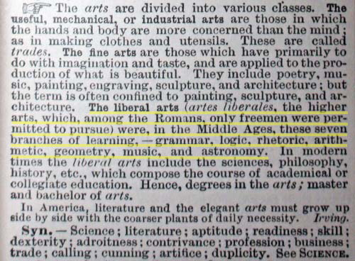

Natural Law Resources
Natural Law Resources
This is a list of resources for further information on Natural Law and the Trivium.
The Trivium: The Liberal Arts of Logic, Grammar, and Rhetoric by Sister Miriam Joseph
The End of All Evil by Jeremy Locke
WhatonEarthisHappening.com
TriviumEducation.com

Webster's Dictionary definition of Liberals Arts in 1893.